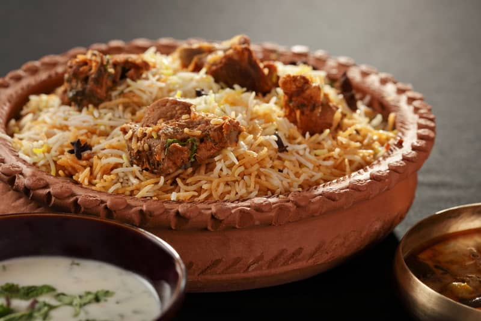
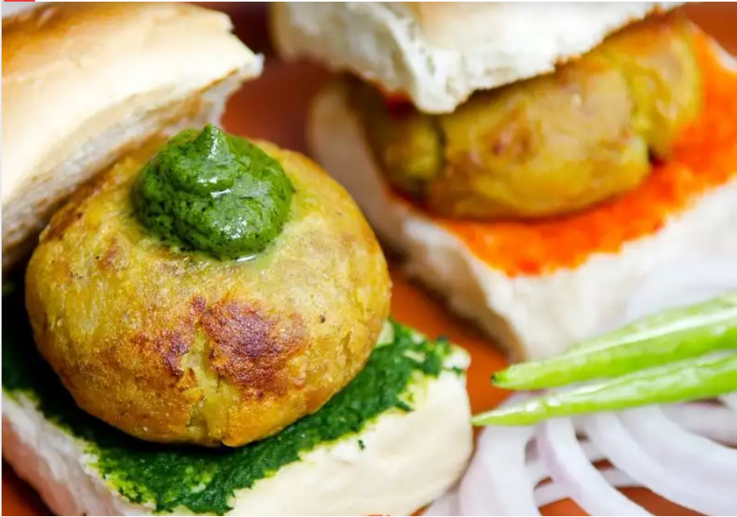

Hyderabadi Biryani
If you were to rank the cuisine of Hyderabad by popularity, the biryani of Hyderabad will be at the top of the charts without the least confusion in the matter. Most people would be ready to consume it at any hour of the day and its rich aromatic flavour and taste never fail to bring anyone back for a second helping! It is usually made with mutton, but chicken biryani is also a hot favourite. Hyderabad’s most popular Biryani outlet, Paradise, has special packaging available for people who carry huge quantities of it home, on a domestic flight.
